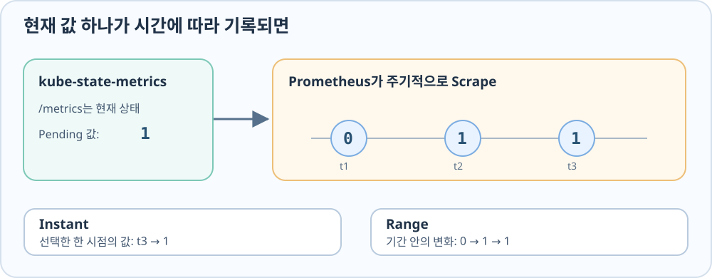

현재 값이 시계열이 되기까지
원시 /metrics에서 알 수 있는 것은 kube-state-metrics가 지금 내보내는 값이다. “아까는 Ready가 몇 개였지?”, “Pending이 언제부터 늘었지?”처럼 시간에 따른 변화를 보려면 값을 반복 수집하고 저장할 곳이 필요하다. Prometheus는 kube-state-metrics를 주기적으로 Scrape해 메트릭과 수집 시각을 시계열로 저장한다.

Prometheus 설치
다음 Helm 명령은 Prometheus를 observability Namespace에 설치한다. 이 예제는 kube-state-metrics를 별도 Release로 두므로, Chart에 포함된 중복 설치는 prometheus-values.yaml에서 끈다. 이미 설치돼 있다면 이 명령을 반복할 필요가 없다.
helm upgrade --install prometheus prometheus-community/prometheus \
--version 29.33.0 --namespace observability --create-namespace \
-f prometheus-values.yaml
Prometheus 화면 접속
kubectl port-forward는 클라이언트의 localhost:9090을 Prometheus Service에 임시로 연결한다.
kubectl -n observability port-forward svc/prometheus-server 9090:80
브라우저에서 http://localhost:9090을 열면 PromQL을 직접 입력할 수 있다.
Prometheus의 수집 상태 확인
첫 쿼리로 up을 조회하면 Prometheus가 각 대상을 Scrape할 수 있는지 알 수 있다. 터미널에서는 아래 kubectl get --raw가 API Server의 Service Proxy를 통해 Prometheus Query API에 up 쿼리를 전달한다. jq는 응답 JSON에서 수집 대상과 값만 보여준다.
kubectl get --raw \
'/api/v1/namespaces/observability/services/http:prometheus-server:80/proxy/api/v1/query?query=up' \
| jq '.data.result[] | {job: .metric.job, value: .value[1]}'
up은 Prometheus의 수집 대상별 Scrape 성공 여부다. 값 1은 최근 Scrape 성공, 0은 실패를 뜻한다.
Pending Pod 상태 질의
수집 경로가 동작하면 먼저 GPU 4개를 요청한 gpu-observability-pending을 조회한다. 이 쿼리는 Pod가 현재 Pending인지 묻는다.
kube_pod_status_phase{namespace="gpu-resource-lab",pod="gpu-observability-pending",phase="Pending"} == 1
다음 쿼리는 Scheduler가 이 Pod를 배치 불가로 표시했는지 묻는다.
kube_pod_status_unschedulable{namespace="gpu-resource-lab",pod="gpu-observability-pending"} == 1
두 값이 모두 1이면 Pod가 Pending이고 Scheduler도 배치할 수 없다고 보고 있다. == 1은 값이 0인 시계열을 걸러 현재 참인 상태만 남긴다. 시간 범위를 바꾸면 이 상태가 언제부터 나타났는지도 볼 수 있다.
Scheduler Event로 배치 실패 원인 확인
Pending과 배치 불가 상태만으로는 이유를 알 수 없다. 아래 명령은 해당 Pod의 Event 부분을 출력해 Scheduler가 기록한 이유를 읽는다.
kubectl -n gpu-resource-lab describe pod gpu-observability-pending \
| sed -n '/Events:/,$p'
예제처럼 한 Pod가 GPU 4개를 요구하는데 두 Worker가 각각 2개씩만 제공한다면, Event의 FailedScheduling에서 Insufficient nvidia.com/gpu를 확인할 수 있다. 같은 Pending이라도 Node Label 불일치나 Taint가 원인일 수 있으므로, 메트릭으로 대상을 찾은 다음 Event로 원인을 확인한다.
Running Pod 준비 상태 질의
이번에는 이미 배치된 gpu-request-one을 조회한다. Ready 조건이 참인 시계열의 값은 1, 컨테이너의 누적 재시작 횟수는 예제에서 0이다.
kube_pod_status_ready{namespace="gpu-resource-lab",pod="gpu-request-one",condition="true"}
kube_pod_container_status_restarts_total{namespace="gpu-resource-lab",pod="gpu-request-one"}
두 값은 Pod가 준비됐는지와 재시작했는지를 답한다. GPU 계산이 실행됐거나 요청 처리가 빠르다는 뜻은 아니다.
Deployment Replica 차이 질의
Deployment의 원하는 Replica 수에서 Ready Replica 수를 빼면 아직 준비되지 않은 수를 볼 수 있다. 원하는 수·현재 수·Ready 수·Available 수의 차이는 Deployment Replica 메트릭 읽기에서 먼저 구분한다.
kube_deployment_spec_replicas{namespace="gpu-resource-lab",deployment="replica-gap-lab"}
- kube_deployment_status_replicas_ready{namespace="gpu-resource-lab",deployment="replica-gap-lab"}
Desired가 2이고 Ready가 0이면 결과 2는 두 개가 부족하다는 뜻이다. Ready가 2라면 결과 0은 차이가 없다는 뜻이다.
메트릭 해석의 경계
up=1은 Scrape가 성공했다는 뜻이지 대상 Application의 모든 기능이 정상이라는 판정은 아니다. Deployment의 Replica 차이는 같은 시각에 조회한 두 메트릭으로 계산해야 한다. 또한 Pending이나 Ready는 Kubernetes 상태를 표현할 뿐 GPU 연산 성능을 측정하지 않는다.
같은 PromQL을 화면에서 직접 탐색하고 계속 볼 질문을 패널로 옮기는 과정은 Grafana Explore와 Dashboard로 이어진다.